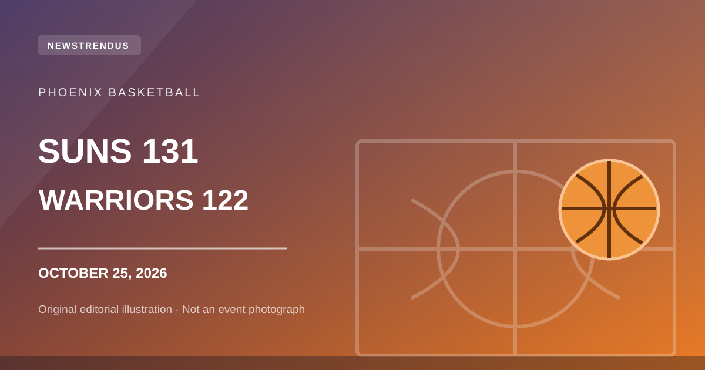
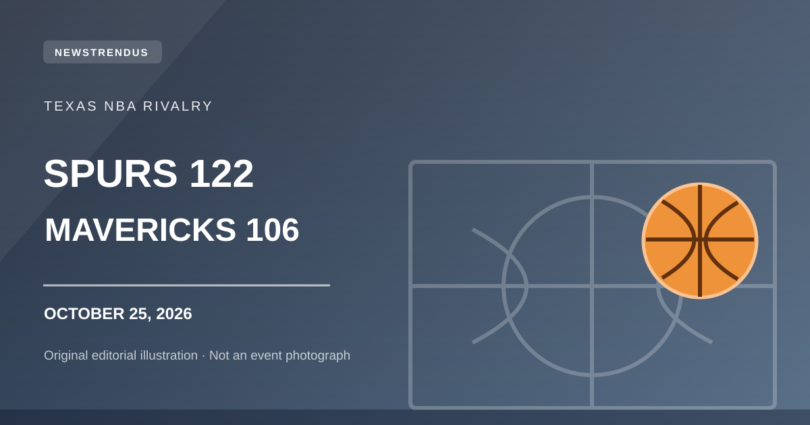
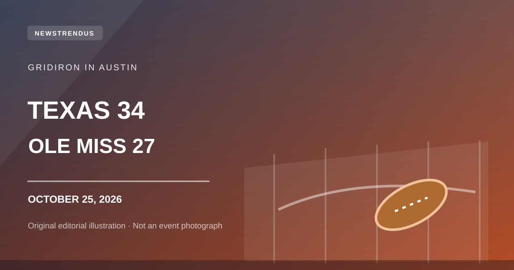
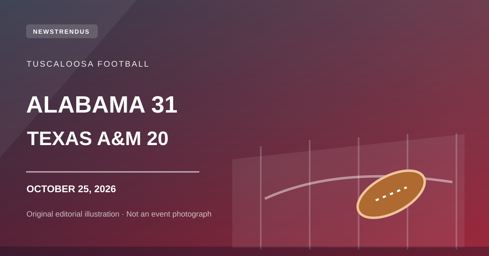

US · OCTOBER 25, 2026
2027 Social Security COLA Is 3.6%: Payment Dates and What Changes
What the confirmed benefits increase means for monthly payments, 2027 SSI timing and official notices.
Trending USA topics and verified news presented as useful, independent English-language reports. Every article links to its factual sources and uses an original editorial illustration—not an event photograph.
What the confirmed benefits increase means for monthly payments, 2027 SSI timing and official notices.

Booker leads Phoenix as Golden State falls to 0–3. Verified score and key takeaways.

San Antonio's late surge earns its first win; Wembanyama and Harper lead the way.

Texas survives a stirring Ole Miss comeback in Austin, with verified statistics.

Alabama scores 14 unanswered points in the fourth to reverse a three-point deficit.

A verified qualifying recap and what to know before the Sunday race.